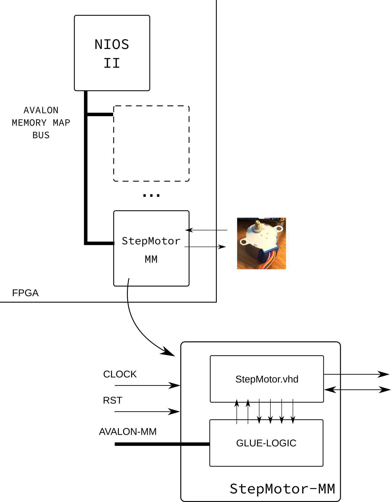

👁 Entrega 3¶
2020-2
- Material atualizado.
O que deve ser entregue?
- Pasta:
Entrega_3_FPGA_NIOS_IP - Vídeo do projeto funcionando com uma explicação (aprox 1.5 min)
Nessa entrega iremos encapsular o periférico que criamos para controlar o motor de passos (Entrega-1) no Plataform Designer (criando um periférico mapeado em memória) a fim de possuirmos um componente dedicado para controlar o motor.
Hardware¶
O diagrama a seguir é uma visão geral do que deve ser feito, nessa concepção iremos "encapsular" o IP da desenvolvido na Entrega-1 em um "periférico mapeado em memória" (StepMotor-MM), para isso será necessário adicionar uma lógica extra, normalmente chamada de Glue Logic que realiza a interface entre o barramento e o IP.

Glue Logic¶
A lógica de controle deve interfacear com o periférico do Motor de passos em todos os sinais de controle (menos nos de saída (pahse)) de maneira abstrair o acesso mapeado em memória para o periférico. A maneira mais fácil de fazer isso é definindo funcionalidades a endereços do periférico, por exemplo:
| Offset | Funcionalidade | Tipo |
|---|---|---|
| 0 | EN | R/W |
| 1 | DIR | R/W |
| 2 | VEL | R/W |
| ... | ... |
A tabela anterior mapeia para cada endereço do periférico uma funcionalidade diferente, nesse exemplo, se o usuário deseja ativar o motor, deve fazer a escrita no endereço 0 desse periférico.
Note que alguns endereços são Read Only e outros Read/Write (tipo), isso se dá porque não tem sentido (nem é possível fisicamente) escrever me alguns endereços.
(rubrica C) Software¶
Além da parte de HW, iremos desenvolver uma biblioteca em C que irá abstrair a interface com esse periférico. O periférico deve possuir um driver capaz de interagir com o periférico. Iremos padronizar algumas funções a fim de definirmos um padrão de interface:
// Para rubrica C
int motor_init( ..... ); // Inicializa o periférico
int motor_halt( ..... ); // Desativa o periférico
int motor_en( ..... ); // retorna se houve algum click
(rubrica A/B) Software (melhorando)¶
Adicionar as seguintes funções (cada uma + meio conceito):
// Para rubrica B/A
int motor_dir( ..... ); // configura direção
int motor_vel( ..... ); // condigura velocidade
motor.c e motor.h.